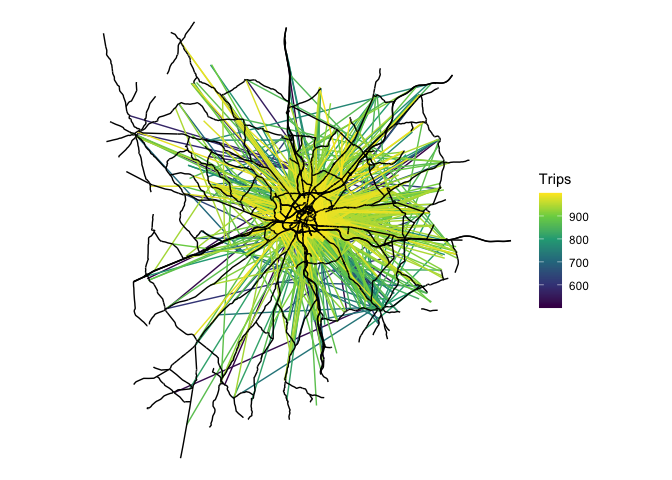

remotes::install_dev("tmap")
library(spanishoddata)
library(tidyverse)
library(sf)
library(tmap)Introduction
This vignette serves as a place to showcase use cases of the package. We’ll start by loading a week’s worth of origin-destination data for the city of Salamanca, building on the example in the README (note: these chunks are not evaluated):
od_db <- spod_get(
type = "od",
zones = "distritos",
dates = c(start = "2024-03-01", end = "2024-03-07")
)
distritos <- spod_get_zones("distritos", ver = 2)
distritos_wgs84 <- distritos |>
sf::st_simplify(dTolerance = 200) |>
sf::st_transform(4326)
od_national_aggregated <- od_db |>
group_by(id_origin, id_destination) |>
summarise(Trips = sum(n_trips), .groups = "drop") |>
filter(Trips > 500) |>
collect() |>
arrange(desc(Trips))
od_national_aggregated
od_national_interzonal <- od_national_aggregated |>
filter(id_origin != id_destination)
salamanca_zones <- zonebuilder::zb_zone("Salamanca")
distritos_salamanca <- distritos_wgs84[salamanca_zones, ]
ids_salamanca <- distritos_salamanca$id
od_salamanca <- od_national_interzonal |>
filter(id_origin %in% ids_salamanca) |>
filter(id_destination %in% ids_salamanca) |>
arrange(Trips)
od_salamanca_sf <- od::od_to_sf(
od_salamanca,
z = distritos_salamanca
)Disaggregating desire lines
For this you’ll need some additional dependencies:
remotes::install_github("dabreegster/odjitter", subdir = "r")
remotes::install_github("nptscot/osmactive")We’ll get the road network from OSM:
salamanca_boundary <- sf::st_union(distritos_salamanca)
osm_full <- osmactive::get_travel_network(salamanca_boundary)
osm <- osm_full[salamanca_boundary, ]
drive_net <- osmactive::get_driving_network(osm)
drive_net_major <- osmactive::get_driving_network_major(osm)
cycle_net <- osmactive::get_cycling_network(osm)
cycle_net <- osmactive::distance_to_road(cycle_net, drive_net_major)
cycle_net <- osmactive::classify_cycle_infrastructure(cycle_net)
map_net <- osmactive::plot_osm_tmap(cycle_net)
map_net
We can use the road network to disaggregate the desire lines:
od_jittered <- odjitter::jitter(
od_salamanca_sf,
zones = distritos_salamanca,
subpoints = drive_net,
disaggregation_threshold = 1000,
disaggregation_key = "Trips"
)Let’s plot the disaggregated desire lines:
od_jittered |>
arrange(Trips) |>
ggplot() +
geom_sf(aes(colour = Trips), size = 1) +
scale_colour_viridis_c() +
geom_sf(data = drive_net_major, colour = "black") +
theme_void()
The results show that you can add value to the OD data by disaggregating the desire lines with the odjitter package. This can be useful for understanding the spatial distribution of trips within a zone for transport planning.
We have plotted the disaggregated desire lines on top of the major road network in Salamanca. A next step could be routing to help prioritise infrastructure improvements.